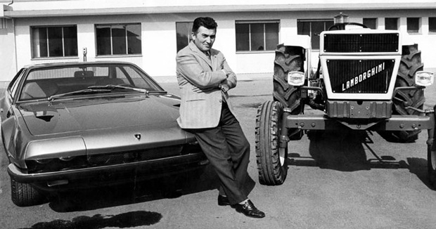
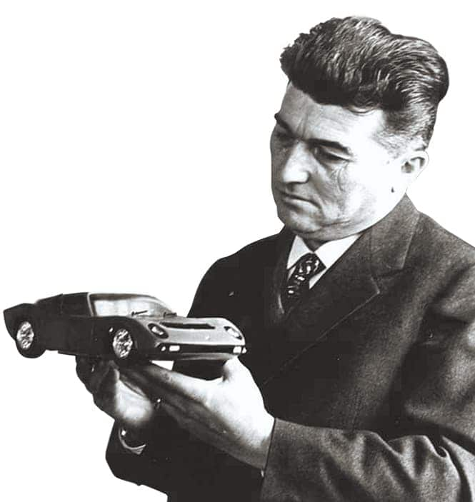
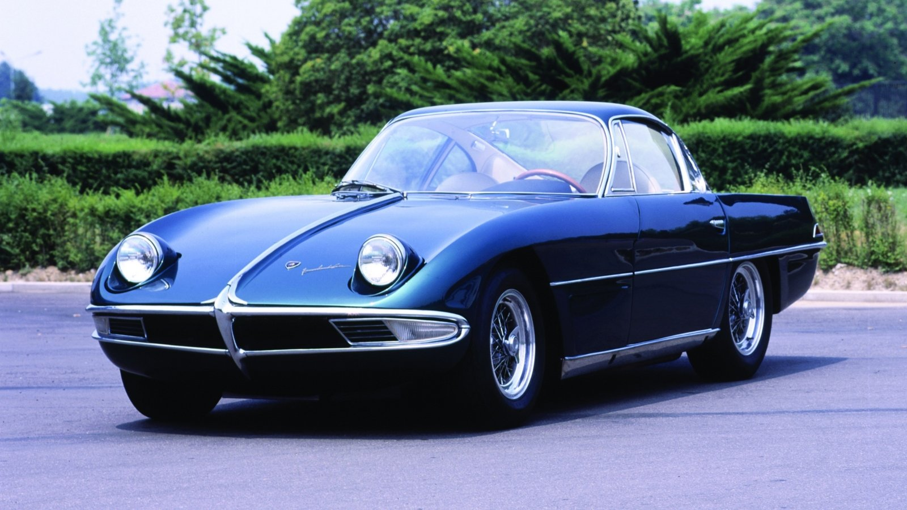
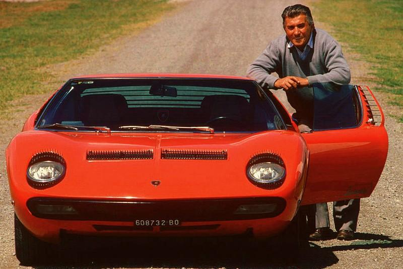
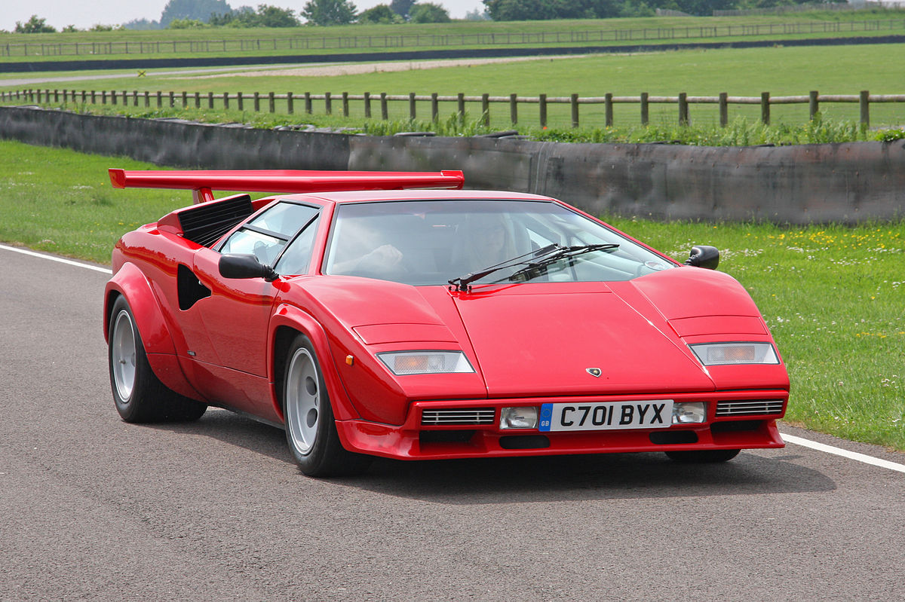
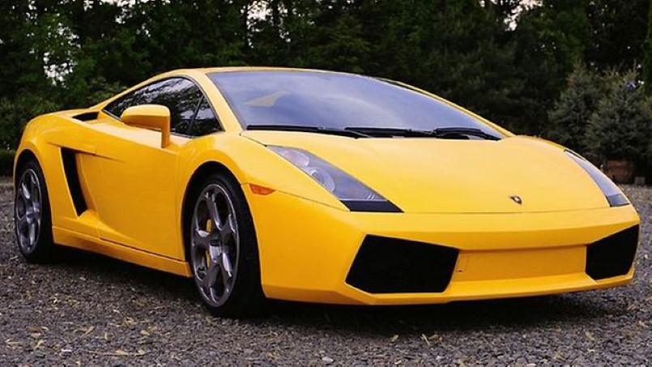
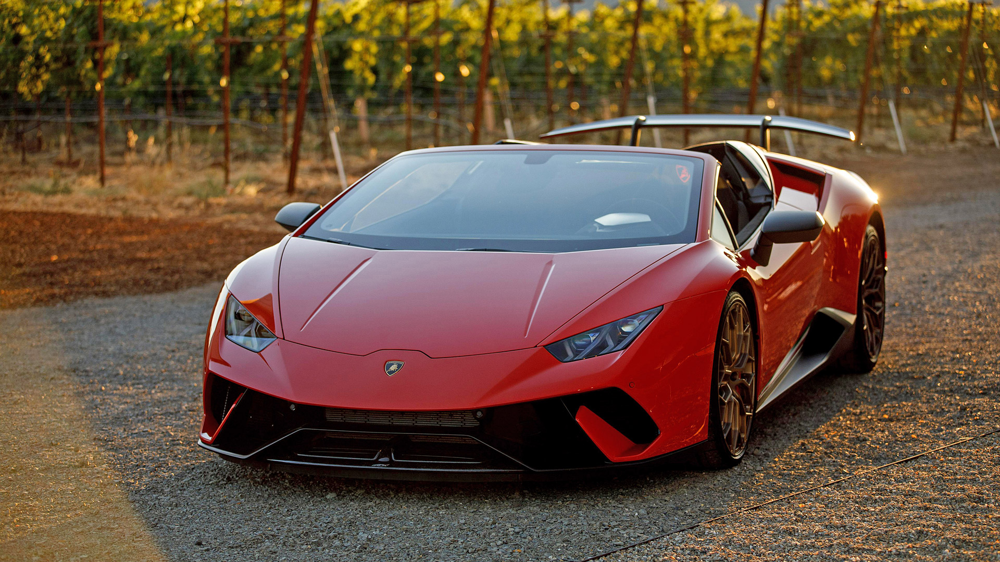

LAMBORGHINI
LAMBORGHINI
 Ferruccio Lamborghini nasceu em 28 de abril de 1916, para os viticultores Antonio e Evelina Lamborghini, na casa número 22 em Renazzo di Cento , na província de Ferrara , na região de Emilia-Romagna, no norte da Itália. De acordo com seu certificado batismal, Ferruccio foi batizado como católico romano quatro dias depois, em 2 de maio. Quando jovem, a Lamborghini foi atraída mais para máquinas agrícolas do que para o estilo de vida agrícola em si. Após seu interesse pela mecânica, a Lamborghini estudou no instituto técnico Fratelli Taddia, perto de Bolonha . Em 1940, ele foi convocado para oForça Aérea Real Italiana , onde atuou como mecânico na guarnição italiana na ilha de Rodes (território do Reino da Itália desde 1911, após a Guerra Ítalo-Turca ), tornando-se o supervisor do veículo unidade de manutenção. Lamborghini foi levado como prisioneiro quando a ilha caiu para os britânicos no final da guerra em 1945, e não foi capaz de voltar para casa até o ano seguinte. Ele se casou, mas sua esposa morreu em 1947, dando à luz seu primeiro filho, um menino chamado Tonino. Após a Segunda Guerra Mundial, a Lamborghini abriu uma garagem em Pieve di Cento . Em seu tempo livre, a Lamborghini modificou um velho Fiat Topolino que ele havia comprado, o primeiro de muitos que ele teria ao longo dos anos. Ele fez uso de suas habilidades mecânicas para transformar o carro da cidade em um carro de dois lugares e entrou no carro em 1948, Mille Miglia . Sua participação terminou depois de 700 milhas (1.100 km), quando ele correu o carro para o lado de um restaurante na cidade de Fiano, em Turim . Como resultado, a Lamborghini perdeu seu entusiasmo pelo automobilismo, um sentimento que duraria por muitos anos. 
Em 1947, a Ferruccio Lamborghini reconheceu um mercado emergente na Itália do pós-guerra dedicado à revitalização agrícola e industrial. Usando peças de motores de veículos militares e diferenciais dos centros ARAR (Azienda Recupero Alienazione Residuati), a Lamborghini construiu o primeiro de seus tratores "Cariocas", baseados nos motores a gasolina de seis cilindros dos caminhões Morris. Como a gasolina na Itália era proibitivamente cara, a Lamborghini aumentou os motores Morris com um atomizador de combustível de sua própria criação, o que permitiu que os tratores fossem iniciados com gasolina, depois mudassem para o combustível diesel mais barato. Com base no sucesso inicial da Carioca, a Lamborghini fundou a Lamborghini Trattori e começou a fabricar tratores.
O icônico Riva Aquarama Lamborghini (Casco # 278) foi registrado e entregue em 7 de junho de 1968 ao seu famoso proprietário Ferruccio Lamborghini. O barco tinha algumas características específicas e únicas. Foi o primeiro e único equipado com dois motores Lamborghini e tinha corrimão lateral especial para segurar durante as tentativas de esqui aquático e registro. O compartimento do motor foi modificado para encaixar os motores e um escape especial foi construído apenas para atender às demandas da Ferruccio. Por mais de 20 anos Ferruccio foi o proprietário deste barco até que ele decidiu vender o barco para um amigo próximo em julho de 1988 chamado Angelo Merli. Vários recordes de velocidade foram quebrados e Ferruccio era muito apaixonado por sua Riva como parte de seu estilo de vida e expoente do artesanato e design italianos, talvez até tão apaixonado quanto ele por seu Miura. A crescente riqueza da Lamborghini permitiu que ele comprasse carros mais rápidos e mais caros do que os minúsculos Fiats que ele havia contratado durante sua juventude. Ele possuía carros como Alfa Romeos e Lancias durante o início dos anos 1950, e em um ponto, tinha carros suficientes para usar um diferente a cada dia da semana, adicionando um Mercedes-Benz 300SL , um Jaguar E-Type coupé e dois Maserati. 3500 GTs . Destes últimos, Lamborghini disse: " Adolfo Orsi , então dono da Maserati , era um homem que eu tinha muito respeito: ele tinha começado a vida como um menino pobre, como eu. Mas eu não gostei de seus carros muito. Eles se sentiram pesados e realmente não foram muito rápidos ". Em 1958, a Lamborghini viajou para Maranello para comprar uma Ferrari 250GT , um coupé de dois lugares com um corpo projetado pelo construtor de carroçarias Pininfarina . Ele passou a possuir vários outros ao longo dos anos, incluindo um 250 SWB Berlinetta projetado por Scaglietti e um 250GT 2 + 2 de quatro lugares. Lamborghini achava que os carros da Ferrari eram bons, mas muito barulhentos e irregulares para serem carros de estrada apropriados, classificando-os como carros de corrida reaproveitados com interiores mal construídos.
A Lamborghini descobriu que os carros da Ferrari eram equipados com embreagens inferiores e exigiam viagens contínuas para Maranello para reconstruções; os técnicos escondiam o carro por várias horas para executar o trabalho, para grande aborrecimento da Lamborghini. Ele já havia expressado insatisfação com o serviço de pós-venda da Ferrari , que ele considerou abaixo do padrão. Lamborghini trouxe suas dúvidas para a atenção de Enzo Ferrari , mas foi demitido pelo Modenan notoriamente cheio de orgulho .Depois de modificar com sucesso uma de suas Ferrari 250GTs para superar os modelos de ações, a Lamborghini ganhou o ímpeto de buscar um projeto de fabricação de automóveis, com o objetivo de criar o carro de turismo perfeito que ele achava que ninguém poderia construir para ele. Lamborghini acreditava que um grand tourer deveria ter atributos que estavam faltando nas ofertas da Ferrari, ou seja, alto desempenho sem comprometer o trato , a qualidade do passeio e os compromissos internos. Um homem de negócios inteligente, a Lamborghini também sabia que ele poderia triplicar o lucro se os componentes usados em seus tratores fossem instalados em um carro exótico de alta performance.
Durante a década de 1970, as empresas da Ferruccio Lamborghini começaram a enfrentar dificuldades financeiras. Em 1971, a Lamborghini Trattori, que exportou cerca de metade de sua produção de tratores, teve problemas quando seu importador sul-africano cancelou todas as suas encomendas. Na Bolívia , o novo governo militar, que havia recentemente organizado um golpe de Estado bem-sucedido , cancelou uma grande encomenda de tratores que estavam sendo preparados para o embarque em Gênova . Os funcionários sindicalizados da Trattori não podiam ser demitidos, o que sobrecarregava a empresa. Em 1972, a Lamborghini vendeu toda a sua participação na empresa para a rival SAME, construtora de tratores . Logo, todo o grupo Lamborghini encontrou problemas financeiros. O desenvolvimento na montadora desacelerou quando os custos foram cortados. A Ferruccio Lamborghini começou a cortejar compradores da Automobili e da Trattori, entrando em negociações com Georges-Henri Rossetti, um rico empresário e amigo suíço. Ferruccio vendeu a Rossetti 51% da empresa por US $ 600.000, abandonando assim o controle da montadora que ele havia fundado. Ele continuou a trabalhar na fábrica de Sant'Agata; Rossetti raramente se envolveu nos assuntos da Automobili. A situação não melhorou: a crise do petróleo de 1973 afetou as vendas de carros de alta performance de fabricantes de todo o mundo. Os consumidores migraram para meios de transporte menores e mais práticos, com melhor economia de combustível . Em 1974, Ferruccio ficou desiludido com seu negócio de automóveis. Ele cortou todas as conexões com os carros que levavam seu nome, vendendo sua participação remanescente de 49% na montadora. As ações foram adquiridas por René Leimer, amigo de Georges-Henri Rossetti. Depois de deixar o negócio de fabricação de automóveis, a Lamborghini continuou suas atividades comerciais em outras áreas, incluindo sua empresa de aquecimento e ar condicionado, a Lamborghini Calor. Em 1969, fundou a Lamborghini Oleodinamica SpA, fabricante de válvulas e equipamentos hidráulicos.
Em 1974 Lamborghini saiu do mundo industrial e retirou-se para um 740-acre (3.0 km 2 ) propriedade chamada "La Fiorita" nas margens do Lago Trasimeno , em Castiglione del Lago , uma cidade na Umbria região da Itália central.Voltando às suas raízes agrícolas, a Lamborghini se deliciava em caçar e produzir seus próprios vinhos. A Lamborghini até projetou seu próprio campo de golfe, ao mesmo tempo em que continuou a gerenciar vários interesses comerciais. A Lamborghini teve um filho, Patrizia, aos 58 anos. Aos 76 anos de idade, em 20 de fevereiro de 1993, Lamborghini morreu no Hospital Silvestrini em Perugia, após sofrer um ataque cardíaco quinze dias antes. Lamborghini é enterrado no cemitério de Renazzo.
O mundo das touradas é uma parte fundamental da identidade da Lamborghini. Em 1962, Ferruccio Lamborghini visitou a fazenda de Sevilha de Don Eduardo Miura , um renomado criador de touros espanhóis . O Lamborghini, um touro em pessoa, ficou tão impressionado com os majestosos animais Miura que decidiu adotar um touro furioso como o emblema da montadora que logo encontraria. Depois de produzir dois carros com designações alfanuméricas , a Lamborghini mais uma vez recorreu ao criador de touros para se inspirar. Eduardo ficou cheio de orgulho quando soube que Ferruccio nomeara um carro para sua família e sua linhagem de touros; o quarto Miura a ser produzido foi revelado a ele em seu rancho em Sevilha. O fabricante de automóveis continuaria usando a conexão de touradas em anos futuros. O Islero foi nomeado para o touro Miura que matou o famoso toureiro Manolete em 1947. Espada é a palavra espanhola para espada , por vezes, usado para se referir ao toureiro. O nome do Jarama carregava um duplo significado especial; destinado a se referir apenas à região histórica de touradas na Espanha, Ferruccio estava preocupado com a confusão com a também histórica pista de automobilismo de Jarama . Depois de batizar o Urraco depois de uma raça de touro, em 1974, Lamborghini quebrou da tradição, nomeando o Countach não para um touro, mas para contacc , uma exclamação de surpresa piemontesa . Diz a lenda que o estilista Nuccio Bertone soltou a palavra em surpresa quando viu pela primeira vez o protótipo do Countach, "Project 112". O veículo utilitário esportivo LM002 e o Silhouette eram outras exceções à tradição. O Jalpa de 1982 foi nomeado para uma raça de touros; Diablo, pela feroz bula do duque de Veragua , famosa por travar uma batalha épica contra "El Chicorro" em Madri, em 1869; Murciélago , o lendário touro que sobreviveu a 28 golpes de espada e cuja vida foi poupada por "El Lagartijo" por sua atuação em 1879; Gallardo, nomeado para uma das cinco castas ancestrais da raça de touros espanhola; e Reventón, o touro que derrotou o jovem toureiro mexicano Félix Guzmán em 1943. O conceito Estoque de 2008 foi nomeado para o estoc , a espada tradicionalmente usada pelos matadoresDurante as touradas, Enquanto o substituto para o Murcielago, o Aventador (revelado em 2011) foi nomeado para um touro que foi criado pelos filhos de Don Celestino Cuadri Vides. Este touro foi morto em uma briga particularmente horrível, onde depois que o touro foi morto, sua orelha esquerda foi cortada e entregue ao Matador como um sinal de boa sorte.
Todas as empresas da Ferruccio Lamborghini continuam a operar hoje de uma forma ou de outra. Seu filho, Tonino, projeta uma coleção de roupas e acessórios sob a marca Tonino Lamborghini, além de projetar o Town Town , um microcarro elétrico que foi revelado no Salão Automóvel de Bolonha em 1999.Filha de Ferruccio, Patrizia A Lamborghini, administra a vinícola Lamborghini em sua propriedade em Umbria. Em 1995, o filho de Ferruccio, Tonino, abriu um museu que homenageia o legado da Lamborghini, o Centro Studi e Ricerche Ferruccio Lamborghini em Dosso ( Ferrara ), que foi transferido para Argelato (Bolonha) em 2014 com o novo nomeMuseu Ferruccio Lamborghini.